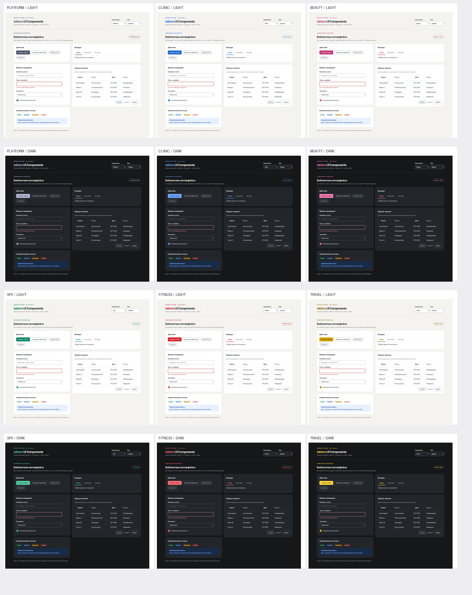

От брендбука к компонентным библиотекам
Alpha.5 проверяет обратную совместимость Web Core, добавляет локализацию уведомлений RU/EN и корректную сортировку чисел. React/TypeScript и Avalonia остаются исходниками до независимой сборки. Полный отраслевой прототип Alpha.1, 6 продуктовых направлений, две темы и утверждённые бренд-ресурсы сохранены.
✓ Web Core: 53 + 29 + 19 Chromium QA ✓ 274 статических проверки ✓ npm offline install PASS ✓ 248 оригиналов сохранено

Web Core · npm-пакет
Зависимость только от браузера. Кнопки, поля, таблицы, вкладки, статусы, диалоги и уведомления. Безопасный вывод текста, офлайн npm-пакет с TypeScript декларациями.
API и интеграцияReact/TypeScript · исходники
14 React-компонентов с типами и controlled/uncontrolled контрактами. Публикация и runtime React-тесты заблокированы отсутствием npm registry в этой среде.
Исходники и команды сборкиAvalonia · шаблоны
Opt-in ControlTheme, состояния и приложение-пример для .NET 10 / Avalonia 11.3.22. XML проверен; нативная сборка потребует .NET SDK.
Интеграция и ограниченияКачество · границы этапа
Проверены клавиатура, темы, таблицы, адаптивность, фокус, XSS-безопасный вывод. Скринридеры, ОС и production-интеграция остаются на Beta gate.
Матрица доступности · План Beta